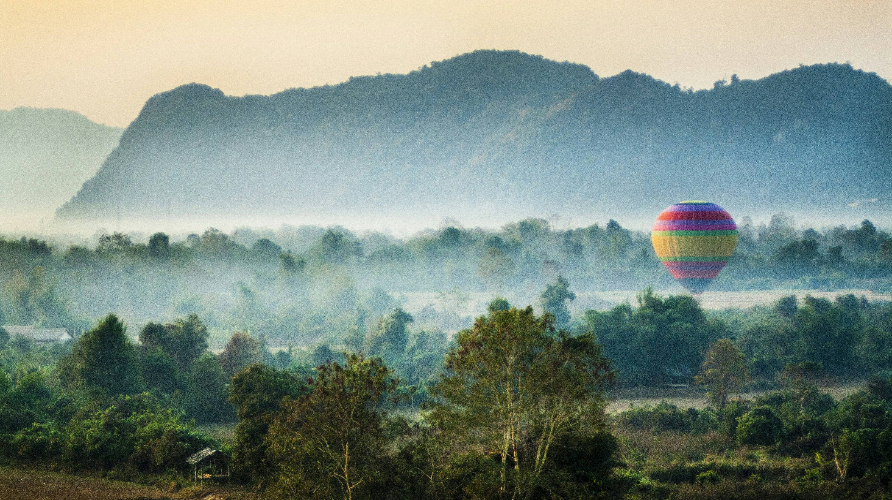

Exploring the Hidden Gems of Southeast Asia

Southeast Asia is a treasure trove of breathtaking landscapes, rich cultural experiences, and unforgettable adventures waiting to be discovered. Beyond the well-trodden paths of popular destinations lie countless hidden gems that offer authentic experiences for the intrepid traveler. From pristine beaches to ancient temples, bustling markets to tranquil villages, this diverse region offers something for every type of explorer.
Undiscovered Islands of Thailand
While Phuket and Koh Samui draw millions of visitors each year, Thailand's lesser-known islands offer pristine beaches and authentic local experiences without the crowds. Consider exploring Koh Yao Noi, situated in the middle of Phang Nga Bay between Phuket and Krabi, where traditional farming and fishing communities welcome visitors to experience their way of life. The island's west coast provides stunning views of limestone karsts rising from emerald waters.
Further south, Koh Lanta maintains a relaxed atmosphere with long stretches of golden sand beaches and a unique cultural blend of Thai-Muslim, Thai-Chinese, and original Sea Gypsy inhabitants. The island's quiet resorts and family-run businesses provide a respite from the commercialization found in more popular destinations, while still offering modern amenities for comfortable stays. For true serenity, venture to the nearby Koh Rok islands, an uninhabited marine reserve with some of the clearest waters and most vibrant coral reefs in the Andaman Sea.
Further south, Koh Lanta maintains a relaxed atmosphere with long stretches of golden sand beaches and a unique cultural blend of Thai-Muslim, Thai-Chinese, and original Sea Gypsy inhabitants. The island's quiet resorts and family-run businesses provide a respite from the commercialization found in more popular destinations, while still offering modern amenities for comfortable stays. For true serenity, venture to the nearby Koh Rok islands, an uninhabited marine reserve with some of the clearest waters and most vibrant coral reefs in the Andaman Sea.

Cultural Treasures of Vietnam
Beyond Hanoi and Ho Chi Minh City lies a wealth of cultural experiences. The ancient town of Hoi An offers magnificent architecture and local crafts, with its well-preserved Ancient Town showcasing a unique fusion of Vietnamese, Chinese, Japanese, and European influences. The town's lantern-lit streets come alive at night, creating a magical atmosphere that seems to transport visitors centuries back in time.
In the northern highlands, the terraced rice fields of Sapa cascade down mountainsides in a breathtaking display of human ingenuity working in harmony with nature. Here, homestay opportunities with ethnic minority communities like the Hmong, Dao, and Tay offer insights into traditional ways of life that have remained largely unchanged for generations. Visitors can trek between villages, participate in daily activities like farming or weaving, and share meals featuring locally grown ingredients prepared using traditional methods.
In the northern highlands, the terraced rice fields of Sapa cascade down mountainsides in a breathtaking display of human ingenuity working in harmony with nature. Here, homestay opportunities with ethnic minority communities like the Hmong, Dao, and Tay offer insights into traditional ways of life that have remained largely unchanged for generations. Visitors can trek between villages, participate in daily activities like farming or weaving, and share meals featuring locally grown ingredients prepared using traditional methods.

Cambodia's Temple Treasures Beyond Angkor
While Angkor Wat rightfully claims its place as one of the world's most impressive archaeological sites, Cambodia houses numerous other temples that offer equally captivating experiences with far fewer visitors. The Banteay Chhmar complex, located near the Thai border, features massive stone faces similar to those found at the Bayon temple in Angkor, yet you might find yourself exploring entirely alone, surrounded only by the sounds of the jungle.
Further southeast, the temple of Preah Vihear perches dramatically on a cliff overlooking the Cambodian plains, offering breathtaking views and remarkable Khmer architecture. The remote location and political disputes with neighboring Thailand have kept this UNESCO World Heritage site off most tourist itineraries, making it a rewarding destination for those seeking solitude among ancient stones. The journey to reach these sites often involves traversing rural Cambodia, providing glimpses into everyday life in the countryside, where water buffalo plow fields and children play in villages of traditional wooden stilt houses.
Further southeast, the temple of Preah Vihear perches dramatically on a cliff overlooking the Cambodian plains, offering breathtaking views and remarkable Khmer architecture. The remote location and political disputes with neighboring Thailand have kept this UNESCO World Heritage site off most tourist itineraries, making it a rewarding destination for those seeking solitude among ancient stones. The journey to reach these sites often involves traversing rural Cambodia, providing glimpses into everyday life in the countryside, where water buffalo plow fields and children play in villages of traditional wooden stilt houses.

Laos: The Land of a Million Elephants
Landlocked Laos, with its laid-back atmosphere and stunning mountainous landscapes, remains one of Southeast Asia's most unspoiled destinations. The ancient royal capital of Luang Prabang, where saffron-robed monks collect alms at dawn against a backdrop of French colonial architecture, offers a serene introduction to Lao culture. Beyond this UNESCO-protected city, adventures await in the country's remote regions.
The mysterious Plain of Jars in Xieng Khouang province features hundreds of massive stone jars scattered across rolling hillsides, their origins and purpose still debated by archaeologists. The region's tragic history during the Secret War of the 1960s and 70s adds another layer to visitors' understanding as they learn about ongoing UXO (unexploded ordnance) clearance efforts.
In southern Laos, the 4,000 Islands (Si Phan Don) region of the Mekong River creates a tranquil archipelago where time seems to slow down. Here, rare Irrawaddy dolphins can be spotted, powerful waterfalls thunder, and villages are connected by simple wooden boats rather than roads. Accommodations range from basic guesthouses to eco-lodges built in traditional styles, all offering an authentic glimpse into the rhythms of river life.

The mysterious Plain of Jars in Xieng Khouang province features hundreds of massive stone jars scattered across rolling hillsides, their origins and purpose still debated by archaeologists. The region's tragic history during the Secret War of the 1960s and 70s adds another layer to visitors' understanding as they learn about ongoing UXO (unexploded ordnance) clearance efforts.
In southern Laos, the 4,000 Islands (Si Phan Don) region of the Mekong River creates a tranquil archipelago where time seems to slow down. Here, rare Irrawaddy dolphins can be spotted, powerful waterfalls thunder, and villages are connected by simple wooden boats rather than roads. Accommodations range from basic guesthouses to eco-lodges built in traditional styles, all offering an authentic glimpse into the rhythms of river life.
Myanmar's Untouched Landscapes
Having only recently opened to widespread tourism before political challenges resumed, Myanmar offers experiences that feel untouched by mass tourism. The ancient city of Bagan, with over 2,000 temples and pagodas scattered across a vast plain, rivals Angkor in scale and grandeur yet receives only a fraction of the visitors. Watching sunrise or sunset from atop a temple, as the landscape is bathed in golden light, creates memories that last a lifetime.
In the country's eastern Shan State, Inle Lake presents a unique cultural landscape where entire villages stand on stilts above the water, and local Intha fishermen are famous for their distinctive leg-rowing technique. Agricultural gardens float on the lake's surface, while workshops produce everything from silver jewelry to lotus fabric—a rare textile made from the fibers of lotus stems that is considered one of the most expensive natural fabrics in the world.
In the country's eastern Shan State, Inle Lake presents a unique cultural landscape where entire villages stand on stilts above the water, and local Intha fishermen are famous for their distinctive leg-rowing technique. Agricultural gardens float on the lake's surface, while workshops produce everything from silver jewelry to lotus fabric—a rare textile made from the fibers of lotus stems that is considered one of the most expensive natural fabrics in the world.

Practical Tips for Exploring Southeast Asia's Hidden Gems
Venturing beyond the tourist trails in Southeast Asia requires some additional planning and flexibility. Local transportation can be unpredictable, accommodations might be simpler than in major destinations, and communication challenges may arise in areas where English is less commonly spoken. However, these minor challenges are far outweighed by the rewards of authentic experiences.
Consider hiring local guides not only for practical assistance but also for their invaluable cultural insights and connections to communities. Many regions have community-based tourism initiatives that ensure tourism benefits local people directly while providing visitors with more meaningful experiences.
Traveling during shoulder seasons (April-June and September-October) can offer a good balance between favorable weather and thinner crowds. Pack light but include modest clothing for visits to temples and rural communities, reliable rain protection, and a basic medical kit for areas far from healthcare facilities.
Perhaps most importantly, approach these hidden gems with respect and curiosity. Take time to learn a few phrases in local languages, ask permission before photographing people, and be mindful of cultural sensitivities. The warm hospitality of Southeast Asian communities often leaves the deepest impression on travelers, creating connections that transcend language barriers and cultural differences.
Consider hiring local guides not only for practical assistance but also for their invaluable cultural insights and connections to communities. Many regions have community-based tourism initiatives that ensure tourism benefits local people directly while providing visitors with more meaningful experiences.
Traveling during shoulder seasons (April-June and September-October) can offer a good balance between favorable weather and thinner crowds. Pack light but include modest clothing for visits to temples and rural communities, reliable rain protection, and a basic medical kit for areas far from healthcare facilities.
Perhaps most importantly, approach these hidden gems with respect and curiosity. Take time to learn a few phrases in local languages, ask permission before photographing people, and be mindful of cultural sensitivities. The warm hospitality of Southeast Asian communities often leaves the deepest impression on travelers, creating connections that transcend language barriers and cultural differences.
Traveler Perspectives

Maya Chen
Travel Photographer
"The most meaningful images I've captured weren't at famous landmarks, but in quiet moments of daily life in villages rarely visited by outsiders. These places may not be on the cover of travel magazines, but they hold the true spirit of Southeast Asia."

David Nguyen
Cultural Guide
"When travelers take time to venture beyond the standard circuit, they not only discover unprecedented beauty but also contribute to more equitable tourism that benefits communities who haven't traditionally profited from the tourism economy."
Southeast Asia's hidden gems offer the increasingly rare opportunity to experience places where tourism enhances rather than overwhelms local culture. As global tourism continues to grow, these authentic destinations may gradually transform. The privilege of experiencing them in their current state—beautiful, challenging, and genuine—is one that today's conscious travelers can cherish and protect through responsible practices. Whether you're drawn by ancient temples, pristine nature, vibrant cultures, or culinary adventures, the less-explored corners of Southeast Asia promise journeys that will remain vivid in memory long after you've returned home.